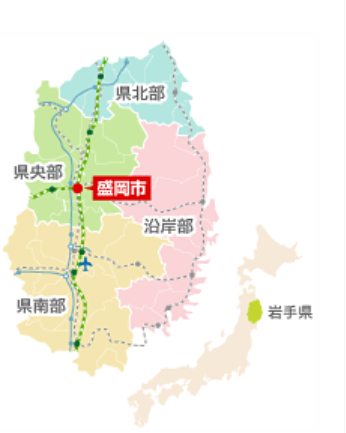

|
日本面積の4を占めていると言われる国内最大級の広大で肥沃な土 地である岩手県。山、海と大自然が与えてくれる計り知れない恩恵は、そこに生きるものにとってまさに楽園と言えます。 岩手県最高峰で南部富士岩手山を中心に広大に広がる山々。その山々に囲まれるように盛岡市を中心に、周辺市町村には「平泉文化」を代表とす る歴史と文化を物語る史跡が点在します。 さらに県内には旅の疲れを癒してくれる温泉郷が数多く点在し、憩いの 宿がより一層旅に奥行きを持たせてくれます。また沿岸部は三陸と称され、 海岸は多種多彩な地形を有し、新鮮な魚介類が豊富なことでも有名です。 春は桜で花見、夏は海水浴、秋は紅葉、冬はウィンタースポーツ、春夏 秋冬に行われる情緒豊かなお祭。そして山海の珍味が私達に舌鼓を打た せてくれ、通年四季折々に楽しむ事が出来るのも、ここいわての魅力の一つともなっています。 岩手県は、地域の特色別に県央・県南・沿岸・県北の４つのエリアに分類されています。 |
 |